↑↓ scroll ↓↑
GAME JOURNAL
updated occasionally
DISCLAIMERS:
•an asterisk (*) at the beginning of a log signifies that the given date is a rough estimate
•a tilde (~) symbol at the beginning of a log signifies that the recorded event likely occurred a few days earlier than listed (e.g. a save file made early in my playthrough for a game is listed as 31 December 2020 in the game and will be mentioned on this log page, but since the actual day when i started the game was probably a few days before that, it will be logged with a tilde (~) symbol)
•the right arrow (→) symbol between two platform names signifies that a game is played on non-native hardware (e.g. emulation, simulation)
•a game is "revisited" if i play it on a different platform than the previous listed entries for the first time
•this page doesn't include every single game that i've played in my entire life!!! although the goal is to log as much from my history as possible, i'm not gonna be able to remember absolutely EVERYTHING.. nor do i have the willpower to do something like that tbh... i simply did my best remembering events and looking through old devices, accounts, purchase receipts, etc.
[INCOMPLETE] WHERE I"M GETTING MY OLDER EVENT DATES FROM: CLICK TO REVEAL TEXT
•General events from August 2021 to now: My Pre-Existing Backloggd Game Journal
•Wii: Wii Message Board
•Nintendo 3DS: Nintendo 3DS Activity Log
•PlayStation 3, 4, 5, Vita: Creation of trophy (achievement) data on my PlayStation Network profile (on PlayStation 3 and PlayStation 4 they let you expand your trophy info to see when the first time you played a game was
•Emulation (specifically for games that involve the right arrow (→) symbol when paired with "Windows PC" or "Android"): Download dates of game files
•iOS: App Store download dates (App Store Home Page > Account Page > Apps), Game Center
•Windows PC games that are available on standard clients (e.g. Steam, Epic Games): Achievements, purchase logs, events present in activity pages, screenshots
•Windows PC games that are not available on standard clients (e.g. Steam, Epic Games): Game file creation dates on my computers (paying attention to dates that I KNOW are associated with me and not where i downloaded them from.. i know sometimes when you download games from websites they show older dates in their properties.. but i'm paying attention to dates that i know are tied to me
2025
[1 June 2025][PlayStation 3] Played "Katamari Forever" for the first time
[1 June 2025][PlayStation] Played "Final Fantasy Chronicles" for the first time
information: includes "Final Fantasy IV" and "Chrono Trigger"
[1 June 2025][PlayStation] Revisited "Ape Escape"
[31 May 2025][PlayStation] Played "Tony Hawk's Pro Skater" for the first time
[30 May 2025][Wii U] Played "Funky Barn" for the first time
note: sure i guess
[21 May 2025][Windows PC] Played "F.E.A.R." for the first time
[21 May 2025][Windows PC] Played "Chivalry 2" for the first time
[19 May 2025][Windows PC] Played "Factorio" for the first time
note (24 may 2025): wow addicted i've been playing like every single day for hours
[18 May 2025][Nintendo Switch] Revisited "Puyo Puyo Tetris"
[16 May 2025][Windows PC] Played "Age of Empires II: Definitive Edition" for the first time in a while
[14 May 2025][Windows PC → Nintendo 64] Played "Perfect Dark" for the first time
[14 May 2025][Windows PC → Nintendo 64] Played "Puyo Puyo SUN" for the first time
[14 May 2025][Windows PC → GameBoy Advance] Played "Drill Dozer" for the first time
[14 May 2025][Windows PC → PlayStation 2] Played "Super Monkey Ball Deluxe" for the first time in a while
[14 May 2025][Windows PC → Nintendo GameCube] Played "Doshin the Giant" for the first time
[14 May 2025][Windows PC → Nintendo 64] Played "Mischief Makers" for the first time
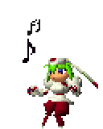[12 May 2025][Windows PC] Played "Heroes of Might and Magic V" for the first time
[8 May 2025][Windows PC] Played "Touhou Mystia's Izakaya" for the first time in a while
note: wtf this game is weirdly just so good
[7 May 2025] Reviewed "Candy Box 2"
[7 May 2025][Browser] Played "Candy Box 2" for the first time
[27 April 2025][Windows PC] Shelved "q.u.q."
note: cool art style and i want to read this but like i'm honestly too busy and was not expecting this to be a visual novel.. idk how long this is tho so maybe blowing it out of proportion..
[26 April 2025][Windows PC] Played "q.u.q." for the first time
[25 April 2025][Windows PC] Revisited "Geometry Wars Evolved"
[25 April 2025][Windows PC] Played "Insaniquarium! Deluxe" for the first time
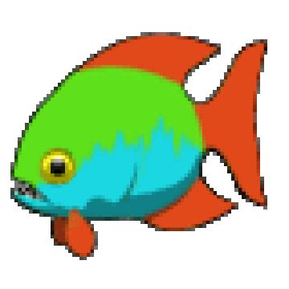[18 April 2025][Windows PC] Shelved "Disillusion ST"
note: idk my mind is elsewhere rn but i do want to pick this back up
[18 April 2025][Windows PC] Played "Disillusion ST" for the first time
[18 April 2025] Reviewed "Journey"
[18 April 2025] Reviewed "Hello Charlotte Ep.3: Childhood's End"
[18 April 2025][Windows PC] Finished "Hello Charlotte Ep.3: Childhood's End"
note: loved this so much seriously
[17 April 2025][Windows PC] Played "Hello Charlotte Ep.3: Childhood's End" for the first time
[14 April 2025][Windows PC] Finished "Hello Charlotte Ep.2: Requiem Aeternam Deo"
[14 April 2025][Windows PC] Played "Hello Charlotte Ep.2: Requiem Aeternam Deo" for the first time
[13 April 2025][Windows PC] Played "10 Beautiful Postcards" for the first time
[10 April 2025][Windows PC] Finished "Hello Charlotte Ep.1: Junk Food, Gods and Teddy Bears"
[9 April 2025][Windows PC] Played "Hello Charlotte Ep.1: Junk Food, Gods and Teddy Bears" for the first time
[1 April 2025][Windows PC] Mastered "Ena: Dream BBQ (Chapter 1)"
[1 April 2025][Windows PC] Finished "Ena: Dream BBQ (Chapter 1)"
[1 April 2025][Windows PC] Played "Ena: Dream BBQ (Chapter 1)" for the first time
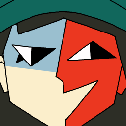[28 March 2025][Windows PC] Played "Touhou Mystia's Izakaya" for the first time
[16 March 2025][Windows PC] Played "Garry's Mod" for the first time
[10 March 2025][Windows PC] Played "Borderlands 2" for the first time
[8 March 2025][Windows PC] Finished "Picayune Dreams" (Story)
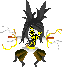[24 February 2025][Windows PC] Played "Age of Empires II: Definitive Edition" for the first time in a while
[24 February 2025][Windows PC] Played "Spore" for the first time
[23 February 2025][Windows PC] Played "Picayune Dreams" for the first time
[20 January 2025][Windows PC] Mastered "Touhou Luna Nights"
[20 January 2025][Windows PC] Played "Melty Blood Actress Again Current Code" for the first time
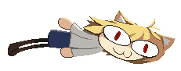[16 January 2025][Windows PC] Finished Episode 2 of Umineko When They Cry
[14 January 2025][Windows PC] Finished "Touhou Luna Nights" (Story)
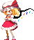[12 January 2025][Windows PC] Played "Pseudoregalia" for the first time
[11 January 2025][Windows PC] Finished Episode 1 Original Tea Party and Episode 1 Witch Tea Party “???” of "Umineko When They Cry"
[10 January 2025][Windows PC] Finished Episode 1 of Umineko When They Cry
[8 January 2025][Windows PC] Played "Umineko When They Cry" for the first time
2024
[23 December 2024][Windows PC] Played "Bat to the Heavens" for the first time
[20 December 2024][Windows PC] Finished Kurugaya Route in "Little Busters!"
[12 December 2024][Browser] Played "Infinite Craft" for the first time
[10 December 2024][Windows PC] Played "Narcissu" for the first time
[9 December 2024][Windows PC] Finished "Gorogoa"
[8 December 2024][Windows PC] Played "Umihara Kawase" for the first time
[8 December 2024][Windows PC] Played "Touhou Luna Nights" for the first time in a while
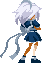[8 December 2024][Windows PC] Played "I am Sakuya: Touhou FPS Game" for the first time
[7 December 2024][Windows PC] Played "Marvel Rivals" for the first time
[6 December 2024][Windows PC] Finished Komari Route in "Little Busters!"
[2 December 2024] Reviewed "Super Mario Maker 2"
[2 December 2024] Reviewed "DJMax Technika Tune"
[2 December 2024] Reviewed "Vib-Ribbon"
[2 December 2024] Reviewed "Skate 3"
[1 December 2024][Windows PC] Finished Mio Route in "Little Busters!"
[30 November 2024][Windows PC] Played "Moon Remix RPG Adventure" for the first time
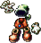[29 November 2024][Windows PC] Finished Rin1 Route in "Little Busters!"
[27 November 2024][Windows PC] Played "Little Busters!" for the first time
[24 November 2024][Windows PC] Played "Hylics" for the first time in a while
[12 November 2024][Windows PC] Played "Webfishing" for the first time
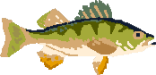[29 October 2024][PlayStation 5] Played "Sea of Thieves" for the first time
[29 October 2024][Windows PC] Played "Touhou Luna Nights" for the first time
[22 October 2024][PlayStation 5] Played "Puyo Puyo Tetris 2" for the first time
[20 October 2024][Nintendo 3DS] Played "Blazblue: Continuum Shift II" for the first time
[20 October 2024][Windows PC] Played "Gorogoa" for the first time
[26 September 2024][Nintendo 3DS] Played "Bye-Bye Boxboy!" for the first time
[18 September 2024][PlayStation Vita] Played "The House in Fata Morgana: Dreams of the Revenants Edition" for the first time
[11 September 2024][Nintendo 3DS] Played "Pac-Man & Galaga Dimensions" for the first time
[11 September 2024][Windows PC] Played "Ultrakill" for the first time
[13 August 2024][Xbox One → Xbox 360] Played "Geometry Wars Evolved" for the first time
[6 August 2024][Nintendo 3DS] Played "Automaton Lung" for the first time
[30 July 2024][Nintendo 3DS] Played "Azure Striker Gunvolt 2" for the first time
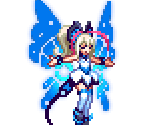[12 July 2024][Nintendo 3DS → Game Boy] Played "Trip World" for the first time
[11 July 2024][Windows PC] Played "Chained Together" for the first time
[2 July 2024][Windows PC] Played "Tony Hawk's Underground 2" for the first time
information: "THUG PRO (Tony Hawk's Underground: Pro)" mod
[2 July 2024][Nintendo Switch] Played "Mario + Rabbids® Kingdom Battle" for the first time
[19 June 2024][Nintendo 3DS] Played "Rhythm Heaven Megamix" for the first time in a while
~[13 June 2024][Nintendo Switch → Super Nintendo Entertainment System] Played "Super Mario World 2: Yoshi's Island" for the first time in a while
[13 June 2024] Reviewed "Pro Jumper! Guilty Gear Tangent!?"
[24 May 2024][Nintendo 3DS → TurboGrafx-16] Played "Alien Crush" for the first time
[23 May 2024][PlayStation 5 → PlayStation 4] Played "Ace Combat 7: Skies Unknown" for the first time
[18 May 2024][Windows PC] Played "Project Heartbeat" for the first time
[16 May 2024][Nintendo Switch] Played "Slay the Spire" for the first time
[15 May 2024][Nintendo 3DS] Played "Puyo Puyo Tetris" for the first time
[15 May 2024][Nintendo 3DS] Played "Persona Q2: New Cinema Labyrinth" for the first time
[24 April 2024][Nintendo 3DS] Played "Hatsune Miku: Project Mirai DX" for the first time in a while
[10 April 2024][Nintendo DSi] Played "Pro Jumper! Guilty Gear Tangent!?" for the first time
[9 April 2024][Nintendo Switch] Played "Picross S+" for the first time
[9 April 2024][Nintendo DS] Played "N+" for the first time
[3 April 2024][Nintendo DS] Played "Peggle: Dual Shot" for the first time
[24 March 2024][Nintendo Switch] Played "N++ (NPLUSPLUS)" for the first time
[19 March 2024][Nintendo DS] Played "Kirby: Canvas Curse" for the first time
[18 March 2024][Nintendo Switch] Played "Miitopia" for the first time
[18 March 2024][Nintendo 3DS] Played "Picross 3D: Round 2" for the first time
[29 February 2024][PlayStation Vita] Played "Hatoful Boyfriend" for the first time
[28 February 2024][PlayStation Vita] Played "Yomawari: Night Alone" for the first time
[28 February 2024][PlayStation 4] Played "428: Shibuya Scramble" for the first time
[27 February 2024][Windows PC] Finished "Endless Dreams: Dreams and Deadlines"
[27 February 2024][Windows PC] Played "Endless Dreams: Dreams and Deadlines" for the first time
[25 February 2024][Nintendo DSi] Played "Aura Aura Climber" for the first time
[23 February 2024][Windows PC] Played "Peggle" for the first time
[22 February 2024][PlayStation Vita] Revisited "Hatsune Miku: Project Diva F 2nd"
[9 February 2024][Nintendo DS] Played "Chibi-Robo!: Park Patrol" for the first time
[25 January 2024][PlayStation 5 → PlayStation 4] Played "Hatsune Miku: Project Diva X" for the first time
[25 January 2024][Nintendo DS] Played "The World Ends with You" for the first time
[16 January 2024][Wii] Played "Skate It" for the first time
[13 January 2024][Nintendo 3DS] Played "WarioWare, Inc.: Mega Microgame$!" for the first time
[5 January 2024][PlayStation Vita] Played "My Singing Monsters (PS Vita)" for the first time
2023
[30 December 2023][PlayStation 5] Played "Trackmania" for the first time
[29 December 2023][PlayStation Vita] Played "Super Monkey Ball: Banana Splitz" for the first time
[24 December 2023][PlayStation 5] Played "Risk of Rain 2" for the first time
[21 December 2023][Windows PC] Played "Musynx" for the first time
[19 December 2023][PlayStation 5] Played "Final Fantasy XVI" for the first time
[17 December 2023][PlayStation 4] Played "Taiko no Tatsujin: Drum Session" for the first time
[15 December 2023][Windows PC] Played "StepMania" for the first time
[15 December 2023][PlayStation Vita] Played "Yomawari: Midnight Shadows" for the first time
[13 December 2023][Windows PC] Played "The Finals" for the first time
[7 December 2023][Windows PC] Played "Age of Empires II: Definitive Edition" for the first time
[28 November 2023][Windows PC] Played "Sid Meier's Civilization V" for the first time
[28 November 2023][Windows PC] Played "The Talos Principle" for the first time
[24 November 2023][Nintendo Switch] Played "Sega Genesis Classics" for the first time
[23 November 2023][Nintendo Switch] Played "Ghost Trick: Phantom Detective" for the first time
[21 November 2023][Nintendo Switch] Played "We Love Katamari REROLL+ Royal Reverie" for the first time
[20 November 2023][Nintendo Switch] Played "Burnout™ Paradise Remastered" for the first time
[20 November 2023][Nintendo Switch] Played "Hatsune Miku: Project Diva Mega Mix+" for the first time
[14 November 2023][Nintendo Switch] Played "Lunistice" for the first time
[14 November 2023][Nintendo Switch] Played "Kirby's Dream Buffet" for the first time
[31 October 2023][PlayStation Vita] Played "Final Fantasy X HD Remaster" for the first time
[30 October 2023][Windows PC → PlayStation 2] Played "Super Monkey Ball Deluxe" for the first time"
[29 October 2023][Nintendo Switch] Played "Super Monkey Ball: Banana Mania" for the first time
[10 October 2023][PlayStation Vita] Played "Guilty Gear XX Accent Core Plus R" for the first time
[4 October 2023][PlayStation Vita] Played "Deemo: The Last Recital" for the first time
[1 October 2023][PlayStation Vita] Played "Under Night In-Birth Exe:Late[st]" for the first time
[1 October 2023][PlayStation Vita] Played "Lumines Electronic Symphony" for the first time
[23 September 2023][PlayStation Vita] Played "PlayStation Vita Pets" for the first time
[15 September 2023][PlayStation 3] Played "Sonic Unleashed" for the first time
[14 September 2023][PlayStation 4] Played "Melty Blood: Type Lumina" for the first time
[14 September 2023][PlayStation Vita] Played "Touhou Kobuto V: Burst Battle" for the first time
[14 September 2023][PlayStation Vita] Played "DJMax Technika Tune" for the first time
[10 September 2023][PlayStation Vita] Played "OlliOlli" for the first time
[9 September 2023][PlayStation Vita] Revisited "Jet Set Radio"
[7 September 2023][PlayStation 3] Played "Hatsune Miku: Project Diva F 2nd" for the first time
[2 September 2023][PlayStation 3 → PlayStation] Played "Einhänder" for the first time
information: japanese version
[29 August 2023][PlayStation 4 → PlayStation 2] Played "The King of Fighters Collection: The Orochi Saga" for the first time
information: includes "The King of Fighters '94", "The King of Fighters '95", "The King of Fighters '96", "The King of Fighters '97", and "The King of Fighters '98: Dream Match Never Ends"
[22 August 2023][PlayStation 3] Played "flOw" for the first time
[19 August 2023][Nintendo Switch] Played Tony Hawk's Pro Skater 1+2" for the first time
[18 August 2023][Nintendo Switch] Played "No More Heroes" for the first time
[6 August 2023][PlayStation 3] Played "Cel Damage" for the first time
[5 August 2023][PlayStation 4 → PlayStation] Played "I.Q Intelligent Qube" for the first time
[5 August 2023][PlayStation 4] Played "Shadow of the Colossus" for the first time
[4 August 2023][PlayStation 3 → PlayStation 2] Played "God Hand" for the first time
[4 August 2023][PlayStation 3 → PlayStation] Played "Grandia" for the first time
[1 August 2023][PlayStation 4] Played "Capcom Fighting Collection" for the first time
information: includes "Vampire: The Night Warriors", "Vampire Hunter: Darkstalkers' Revenge", "Cyberbots: Full Metal Madness", "Super Puzzle Fighter II Turbo", "Red Earth", "Super Gem Fighter: Mini Mix", "Vampire Savior: The Lord of Vampire", "Vampire Hunter 2: Darkstalkers Revenge", "Vampire Savior 2: The Lord of Vampire", and "Hyper Street Fighter II: The Anniversary Edition"
[26 July 2023][PlayStation 4] Mastered "A Year of Springs"
[26 July 2023][PlayStation 4] Played "A Year of Springs" for the first time
[20 July 2023][Windows PC → PlayStation 2] Played "SSX 3" for the first time
[12 July 2023][Windows PC] Played "Mushihimesama" for the first time
[12 July 2023][Windows PC] Played "Rivals of Aether" for the first time
[12 July 2023][Windows PC] Played "People Playground" for the first time
[10 July 2023][Windows PC] Played "BlazBlue: Central Ficxtion" for the first time
[10 July 2023][Windows PC] Played "DoDonPachi Resurrection" for the first time
[7 July 2023][Windows PC] Played "Milk outside a bag of milk outside a bag of milk" for the first time
[7 July 2023][PlayStation 3] Revisited "Mirror's Edge"
[6 July 2023][PlayStation 4] Played "Shenmue" for the first time
[5 July 2023][PlayStation 3] Played "de Blob 2" for the first time
[4 July 2023][PlayStation 3 → PlayStation] Revisited "Vib-Ribbon"
[4 July 2023][PlayStation 3 → Dreamcast] Played "Space CHannel 5: Part 2" for the first time
[4 July 2023][PlayStation 3 → PlayStation] Played "Klonoa: Door to Phantomile" for the first time
[4 July 2023][PlayStation 3 → PlayStation 2] Played "Shadow of the Colossus" for the first time
[3 July 2023][PlayStation 3] Played "Skate 3" for the first time
[2 July 2023][PlayStation 3] Played "Another World - 20th Anniversary Edition" for the first time
[29 June 2023][PlayStation 3] Played "Hatsune Miku: Project Diva F" for the first time
[28 June 2023][PlayStation 4] Played "Shin Megami Tensei III: Nocturne - HD Remaster" for the first time
[27 June 2023][PlayStation 3] Played "Saints Row 2" for the first time
[27 June 2023][PlayStation 3] Played "Skydive: Proximity Flight" for the first time
[26 June 2023][PlayStation 3 → PlayStation] Played "Um Jammer Lammy" for the first time
[26 June 2023][PlayStation 3 → PlayStation] Played "Silent Hill" for the first time
[26 June 2023][Windows PC] Played "Jet Set Radio" for the first time
[26 June 2023][PlayStation 3] Played "LittleBigPlanet" for the first time
[21 June 2023][PlayStation 4] Played "Hatsune Miku: Project Diva Future Tone DX" for the first time
[20 June 2023][Windows PC] Played "Sam & Max Hit the Road" for the first time
[20 June 2023][PlayStation 4] Finished "Feather"
[20 June 2023][PlayStation 4] Played "Feather" for the first time
[19 June 2023][Nintendo Switch] Played "Toree 2" for the first time
[17 June 2023][Nintendo Switch] Played "Puyo Puyo 2" for the first time
[17 June 2023][Nintendo Switch] Played "Demon Turf: Neon Splash" for the first time
[17 June 2023][Nintendo Switch] Played "Toree 3D" for the first time
[14 June 2023][PlayStation 4 → PlayStation 2] Played "(Forbidden) Siren" for the first time
[13 June 2023][Windows PC → Nintendo DS] Played "Flower, Sun, and Rain" for the first time
[13 June 2023][PlayStation 4] Played "Lethal League Blaze" for the first time
[12 June 2023][Windows PC → PlayStation 2] Played "DoDonPachi DaiOuJou" for the first time
[12 June 2023][PlayStation 4] Finished "Gunvolt Chronicles: Luminous Avenger iX"
[12 June 2023][PlayStation 4] Played "Touhou Hyouibana～Antinomy of Common Flowers" for the first time
[11 June 2023][Windows PC] Played "Touhou 8 - Imperishable Night" for the first time
note (7 june 2025): if u read my last note nvm
[10 June 2023][PlayStation 4] Played "Touhou Double Focus" for the first time
[4 June 2023][PlayStation 4] Played "Touhou: Scarlet Curiosity" for the first time
[2 June 2023][PlayStation 4] Played "Gunvolt Chronicles: Luminous Avenger iX" for the first time
[27 May 2023][PlayStation 4] Finished "Clustertruck"
[26 May 2023][PlayStation 4] Played "Clustertruck" for the first time
[25 May 2023][PlayStation 4] Played "Kuukiyomi 2: Consider It More! - New Era" for the first time
[24 May 2023][PlayStation 4 → PlayStation 2] Played "Ape Escape 2" for the first time
[24 May 2023][PlayStation 3] Played "Darkstalkers Resurrection" for the first time
information: includes "Night Warriors: Darkstalkers' Revenge" and "Darkstalkers 3"
[23 May 2023][Windows PC → PlayStation] Played "Vib-Ribbon" for the first time
[23 May 2023][PlayStation 3] Played ".detuned" for the first time
[23 May 2023][PlayStation 4 → PlayStation 2] Played "Jak and Daxter: The Precursor Legacy" for the first time
[23 May 2023][PlayStation 4 → Neo-Geo] Mastered "ACA NEOGEO THE KING OF FIGHTERS '98"
[23 May 2023][PlayStation 4 → Neo-Geo] Played "ACA NEOGEO THE KING OF FIGHTERS '98" for the first time
[21 May 2023][PlayStation 4] Played "Touhou Genso Rondo: Bullet Ballet" for the first time
[20 May 2023][PlayStation 3] Played "rain" for the first time
[18 May 2023][PlayStation 4] Played "Tearaway Unfolded" for the first time
[17 May 2023][PlayStation 4] Played "Fez" for the first time
[16 May 2023][PlayStation 4 → PlayStation 2] Played "Okage: Shadow King" for the first time
[10 May 2023][PlayStation 4] Played "Hohokum" for the first time
[8 May 2023][PlayStation 4] Played "Patapon 2 Remastered" for the first time
[6 May 2023][PlayStation 4] Played "LittleBigPlanet 3" for the first time
[5 May 2023][PlayStation 4] Played "LocoRoco 2 Remastered" for the first time
[3 May 2023][PlayStation 3] Finished "Ico"
[2 May 2023][PlayStation 4] Played "Momodora: Reverie Under the Moonlight" for the first time
[1 May 2023][PlayStation 4] Finished "Inside"
[30 April 2023][PlayStation 4] Revisited "Hollow Knight"
[30 April 2023][PlayStation 4] Played "Inside" for the first time
[29 April 2023][PlayStation 4] Revisited "Celeste"
[10 April 2023][PlayStation 4 → PlayStation] Played "Ape Escape" for the first time
[10 April 2023][PlayStation 3] Played "Ico" for the first time
[19 March 2023][Windows PC] Played "Muse-Dash" for the first time
[14 March 2023][Windows PC] Played "Hi-Fi Rush" for the first time
[12 March 2023][Windows PC] Played "Mirror's Edge" for the first time
[12 March 2023][Windows PC] Played "Hylics" for the first time
[5 March 2023][PlayStation 4] Finished "Neon White"
[26 February 2023][PlayStation 4] Played "Stardew Valley" for the first time
[26 February 2023][PlayStation 4] Played "Ōkami HD" for the first time
[26 February 2023][PlayStation 4] Played "Neon White" for the first time
[25 February 2023][PlayStation 4] Revisited "Superhot"
[25 February 2023][PlayStation 4] Played "Ikaruga" for the first time
[23 February 2023][PlayStation 4] Played "Katamari Damacy REROLL" for the first time
[6 January 2023][PlayStation 4] Played "Metal Slug Anthology" for the first time
[6 January 2023][PlayStation 4] Finished "140"
[6 January 2023][PlayStation 4] Played "140" for the first time
[3 January 2023][PlayStation 4] Played "Sky: Children of the Light" for the first time
[3 January 2023][PlayStation 4] Played "Outer Wilds" for the first time
2022
[31 December 2022][PlayStation 4] Finished "A Short Hike"
[30 December 2022][PlayStation 4] Played "A Short Hike" for the first time
[29 December 2022][PlayStation 4] Finished "Journey"
[29 December 2022][PlayStation 4] Played "Flower" for the first time
[25 December 2022][PlayStation 4] Played "Guilty Gear: Strive" for the first time
[23 December 2022][PlayStation 4 → Nintendo 64] Finished "Doom 64"
[23 December 2022][PlayStation 4] Revisited "Skullgirls: 2nd Encore"
[30 November 2022][Windows PC] Mastered "Getting Over It with Bennett Foddy"
[12 November 2022][Windows PC] Played "Borderlands 2" for the first time
[7 June 2022][PlayStation 4] Played "Refunct" for the first time
[16 May 2022][PlayStation 4] Played "Fortnite: Save the World" for the first time
[19 March 2022][Windows PC] Played "Persona 4 Golden" for the first time
[26 February 2022][Windows PC] Finished "Portal 2"
[24 February 2022][Windows PC] Played "Portal 2" for the first time
[22 February 2022][Windows PC] Finished "Portal"
[21 February 2022][Windows PC] Played "Portal" for the first time
[29 January 2022][Windows PC] Played "Vampire Survivors" for the first time
[2 January 2022][Windows PC] Played "Hollow Knight" for the first time
[1 January 2022][Windows PC] Played "SpongeBob SquarePants: Battle for Bikini Bottom - Rehydrated" for the first time
2021
[31 December 2021][Windows PC] Played "Bloons TD 6" for the first time
[29 December 2021][Windows PC] Finished "A Hat in Time"
[26 December 2021][Windows PC] Played "Disco Elysium" for the first time
[23 December 2021][Windows PC] Played "Jump Force" for the first time
[23 December 2021][Windows PC] Played "Skullgirls: 2nd Encore" for the first time
[21 December 2021][Windows PC] Played "Terraria" for the first time
[26 November 2021][Windows PC] Played "The Sims 4" for the first time
[5 October 2021][Windows PC → PlayStation 2] Played "Katamari Damacy" for the first time
[24 September 2021][Windows PC] Finished "Gris"
[22 September 2021][Windows PC] Played "Gris" for the first time
[12 September 2021][Windows PC] Finished "SuperHot"
[29 August 2021][Windows PC] Played "Yume Nikki" for the first time
[1 August 2021][Windows PC] Played "Hylics 2" for the first time
2020
[17 September 2020][iOS] Played "Among Us" for the first time
[24 July 2020][Nintendo Switch] Played "Animal Crossing: New Horizons" for the first time
[20 June 2020][iOS] Played "Cytus II" for the first time
~[13 June 2020][Nintendo Switch → Super Nintendo Entertainment System] Played "Super Mario World 2: Yoshi's Island" for the first time
[10 June 2020][Nintendo Switch] Played "Super Mario Maker 2" for the first time
[5 June 2020][Nintendo Switch] Played "Kirby's Dream Course" for the first time
[24 April 2020][PlayStation 4] Played "Pac-Man Championship Edition 2" for the first time
[24 April 2020][PlayStation 4] Played "Journey" for the first time
[7 April 2020][PlayStation 4] Played "Apex Legends" for the first time
[3 April 2020][PlayStation 4] Played "Call Of Duty Ghosts" for the first time
[3 April 2020][PlayStation 4] Played "Dragon Ball Xenoverse 2" for the first time
[1 April 2020][iOS] Played "Brawl Stars" for the first time
[25 February 2020][Windows PC] Played "MapleStory 2" for the first time
*[February~April 2020][Windows PC] Played "Touhou 6 - Embodiment of Scarlet Devil" for the first time
[31 January 2020][PlayStation 4] Played "Grand Theft Auto V" for the first time
[31 January 2020][PlayStation 4] Played "Super Destronaut DX" for the first time
[25 January 2020][PlayStation 4] Finished "Persona 5"
2019
[28 December 2019][PlayStation 4] Played "Persona 5" for the first time
[25 December 2019][PlayStation 4] Played "Destiny 2" for the first time
[26 September 2019][iOS] Played "Mario Kart Tour" for the first time
[5 September 2019][Windows PC] Played "Celeste" for the first time
[18 March 2019][iOS] Played "My Singing Monsters" for the first time
*[March 2019][Nintendo Switch] Played "Deltarune Chapter 1&2" for the first time
2018
*[November 2018][Nintendo Switch] Played "Dragon Ball FighterZ" for the first time
*[November 2018][Nintendo Switch] Played "Cave Story+" for the first time
*[April 2018][Windows PC] Finished "Getting Over It with Bennett Foddy"
*[March 2018][iOS] Played "Fortnite" for the first time
2017
*[December 2017][iOS] Played "Getting Over It with Bennett Foddy" for the first time
[21 November 2017][iOS] Played "Animal Crossing: Pocket Camp" for the first time
[27 October 2017][Nintendo Switch] Played "Super Mario Odyssey" for the first time
[12 July 2017][iOS] Played "The Battle Cats" for the first time
*[July 2017][Nintendo Switch] Played "The Legend of Zelda: Breath of the Wild" for the first time
[9 April 2017][iOS] Finished "Papers, Please"
[3 April 2017][iOS] Played "Papers, Please" for the first time
[5 Mar 2017][iOS] Played "PewDiePie's Tuber Simulator" for the first time
[25 February 2017][Windows PC] Played "Rocket League" for the first time
[15 January 2017][iOS] Played "Clash of Clans" for the first time
2016
[31 December 2016][iOS] Played "Geometry Dash World" for the first time
[15 December 2016][iOS] Played "Super Mario Run" for the first time
[3 December 2016][Windows PC] Played "Mandagon" for the first time
[7 August 2016][iOS] Played "Grand Theft Auto: San Andreas" for the first time
[5 August 2016][iOS] Played "Pokemon GO" for the first time
[16 July 2016][Windows PC] Played "mitos.is: The Game" for the first time
[19 June 2016][iOS] Played "Monument Valley" for the first time
[17 June 2016][Nintendo 3DS] Played "Rhythm Heaven Megamix" for the first time
[4 June 2016][iOS] Played "Five Nights at Freddy's 4" for the first time
[13 May 2016][iOS] Played "Clash Royale" for the first time
[9 May 2016][Wii U] Played "Pokkén Tournament" for the first time
[16 April 2016][iOS] Played "Limbo" for the first time
[10 April 2016][Wii U] Played "Typoman" for the first time
[10 April 2016][iOS] Played "Roblox" for the first time
[12 March 2016][Wii U] Played "Minecraft: Wii U Edition" for the first time
[23 February 2016][iOS] Played "Geometry Dash" for the first time
*[February 2016][Windows PC] Played "osu!" for the first time
[17 January 2016][Wii U → Game Boy Advance] Played "Mario & Luigi: Superstar Saga" for the first time
[16 January 2016][Nintendo 3DS] Played "Pokémon Picross" for the first time
[16 January 2016][Nintendo 3DS → Game Boy Color] Played "Super Mario Bros. Deluxe" for the first time
2015
[December 2015][Wii U] Played "Animal Crossing: Amiibo Festival" for the first time
*[November 2015][Windows PC] Played "Undertale" for the first time
[31 October 2015][Nintendo 3DS] Played "Hatsune Miku: Project Mirai DX" for the first time
[31 October 2015][Nintendo 3DS] Played "The Legend of Zelda: Tri Force Heroes" for the first time
[31 October 2015][Nintendo 3DS] Played "YO-KAI WATCH" for the first time
*[October 2015][Wii U] Played "Splatoon" for the first time
*[September 2015][Nintendo 3DS] Played "Animal Crossing: Happy Home Designer" for the first time
[6 June 2015][Wii U → Nintendo 64] Played "Paper Mario" for the first time
[6 June 2015][Nintendo 3DS] Played "BOXBOY" for the first time
[1 June 2015][Nintendo 3DS] Played "Stretchmo" for the first time
[14 April 2015][Nintendo 3DS] Played "Ultimate NES Remix" for the first time
[31 January 2015][Nintendo 3DS] Played "Animal Crossing: New Leaf" for the first time
[24 January 2015][Nintendo 3DS → Game Boy] Played "Super Mario Land" for the first time
[22 January 2015][Wii U → Nintendo Entertainment System] Played "Excitebike" for the first time
[2015][Wii U] Played "Mario Kart 8" for the first time
[2015][Wii U] Played "Super Mario Maker" for the first time
2014
[29 December 2014][Wii U] Played "Disney Infinity" for the first time
[20 December 2014][Wii U → Super Nintendo Entertainment System] Played "Kirby's Dream Land 3" for the first time
[13 December 2014][Wii U] Played "Pikmin 3" for the first time
[December 2014][Wii U] Played "Nintendo Land" for the first time
[December 2014][Wii U] Played "Super Mario 3D World" for the first time
[23 November 2014][Android → Super Nintendo Entertainment System] Played "Super Mario RPG: The Legend of the Seven Stars" for the first time
[19 September 2014][Nintendo 3DS] Played "Super Smash Bros. for Nintendo 3DS" for the first time
[14 August 2014][Nintendo 3DS → Game Boy] Played "Baseball" for the first time
[21 July 2014][Nintendo 3DS] Played "Paper Mario: Sticker Star" for the first time
[20 July 2014][Nintendo 3DS] Played "Donkey Kong Country Returns 3D" for the first time
[7 July 2014][Nintendo 3DS] Played "3D Classics: Kid Icarus" for the first time
[2 July 2014][Nintendo 3DS] Played "Tomodachi Life" for the first time
[26 June 2014][Nintendo 3DS] Played "Rayman Origins" for the first time
[17 June 2014][Nintendo 3DS → Nintendo DSi] Played "Electroplankton Rec-Rec" for the first time
[12 June 2014][Nintendo 3DS] Played "EDGE" for the first time
[12 June 2014][Nintendo 3DS] Played "Ikachan" for the first time
[11 June 2014][Nintendo 3DS] Played "LEGO The Lord of the Rings" for the first time
[10 June 2014][Nintendo 3DS → Game Boy] Played "Kirby's Dream Land" for the first time
[6 June 2014][Nintendo 3DS → Game Boy] Played "Game & Watch Gallery 2" for the first time
[5 June 2014][Nintendo 3DS → Game Boy Color] Played "Wario Land 3" for the first time
[5 June 2014][Nintendo 3DS] Played "Color Zen" for the first time
[4 June 2014][Nintendo 3DS → Nintendo Entertainment System] Revisited "Super Mario Bros. 3"
[4 June 2014][Nintendo 3DS] Played "Art of Balance TOUCH!" for the first time
[10 May 2014][Nintendo 3DS] Played "Mario Golf: World Tour" for the first time
[12 February 2014][Nintendo 3DS] Played "VVVVVV" for the first time
[12 February 2014][Nintendo 3DS → Game Boy] Played "Donkey Kong" for the first time
[12 February 2014][Nintendo 3DS] Played "3D Classics: Kirby's Adventure" for the first time
2013
[December 2013][Nintendo 3DS] Played "Regular Show: Mordecai and Rigby in 8-Bit Land" for the first time
[29 November 2013][Nintendo 3DS → Nintendo Entertainment System] Revisited "Super Mario Bros. 2"
[29 November 2013][Nintendo 3DS → Nintendo Entertainment System] Played "Super Mario Bros: The Lost Levels" for the first time
[November 2013][Nintendo 3DS] Played "The Legend of Zelda: A Link Between Worlds" for the first time
[13 October 2013][Nintendo 3DS] Played "Kingdom Hearts: Dream Drop Distance" for the first time
[5 October 2013][Nintendo 3DS] Played "Rhythm Thief & the Emperor's Treasure" for the first time
[27 September 2013][Nintendo 3DS] Played "New Super Mario Bros. 2" for the first time
[6 September 2013][Nintendo 3DS] Played "Monster Hunter 3 Ultimate" for the first time
[11 August 2013][Nintendo 3DS] Played "Mario & Luigi: Dream Team" for the first time
[4 August 2013][Nintendo 3DS] Played "nintendogs + cats" for the first time
[4 August 2013][Nintendo 3DS] Played "Epic Mickey: Power of Illusion" for the first time
[3 August 2013][Nintendo 3DS] Played "Mario and Sonic at the London 2012 Olympic Games" for the first time
[3 August 2013][Nintendo 3DS] Played "Pokémon Mystery Dungeon: Gates to Infinity" for the first time
[3 August 2013][Nintendo 3DS] Played "Brain Age: Concentration Training" for the first time
[June 2013][Nintendo 3DS] Played "Mario Kart 7" for the first time
[June 2013][Nintendo 3DS] Played "Super Mario 3D Land" for the first time
2012
[2 August 2012][Wii] Played "Rhythm Heaven Fever" for the first time
[2012][Nintendo DS] Played "Rhythm Heaven" for the first time
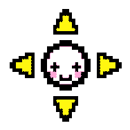[2012][Windows PC] Played "Minecraft" for the first time
2011
[18 January 2011][Wii] Played "Bit.Trip Beat" for the first time
[1 January 2011][Wii] Played "Art of Balance" for the first time
2010
[25 December 2010][Wii] Played "New Super Mario Bros. Wii" for the first time
[14 December 2010][Wii] Played "lilt line" for the first time
[3 December 2010][Wii] Played "Cave Story" for the first time
[20 November 2010][Wii → Sega Genesis] Played "Sonic The Hedgehog 2" for the first time
[17 Novemver 2010][Wii → Nintendo Entertainment System] Played "Mario Bros." for the first time
[16 Novemver 2010][Wii → Nintendo Entertainment System] Played "Super Mario Bros. 3" for the first time
[14 November 2010][Wii → Nintendo Entertainment System] Played "Galaga" for the first time
[13 November 2010][Wii → Nintendo Entertainment System] Played "Super Mario Bros." for the first time
[7 November 2010][Wii → Nintendo Entertainment System] Played "Super Mario Bros. 2" for the first time
[7 November 2010][Wii → Nintendo Entertainment System] Played "Zelda II: The Adventure of Link" for the first time
[31 July 2010][Wii] Played "Super Mario Galaxy 2" for the first time
[1 July 2010][Wii] Played "Wii Sports Resort" for the first time
[26 June 2010][Wii] Played "Wii Sports" for the first time
[24 June 2010][Wii] Played "Mario Kart Wii" for the first time
[24 June 2010][Wii] Played "Mario & Sonic at the Olympic Winter Games" for the first time
2009
[2009][Nintendo GameCube] Played "The Fairly OddParents: Breakin' da Rules" for the first time
*[2009][Nintendo 64] Played "Super Smash Bros." for the first time
*[2009][Nintendo 64] Played "1080° Snowboarding" for the first time
*[2009][Nintendo DS] Played "New Super Mario Bros." for the first time
*[2009][Nintendo DS] Played "Kirby Super Star Ultra" for the first time
2008
[2008][Nintendo GameCube] Played "Sonic Heroes" for the first time
*[2008][Game Boy Color] Played "Pokémon Red(?)" for the first time
*[2008][Nintendo DS] Played "Yoshi's Island DS" for the first time